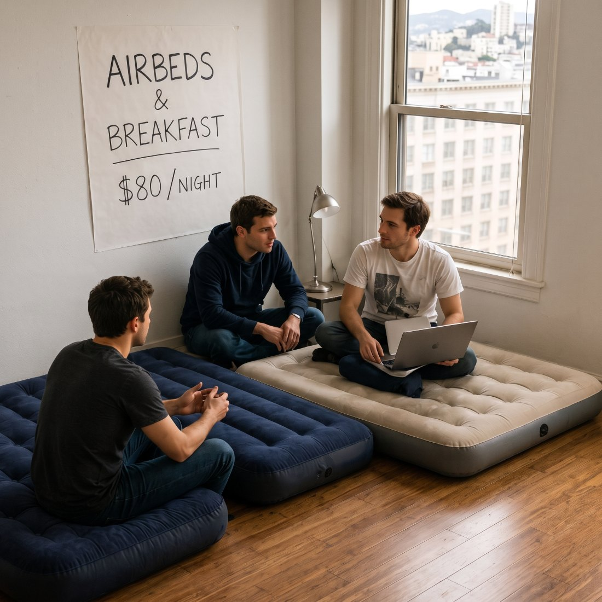
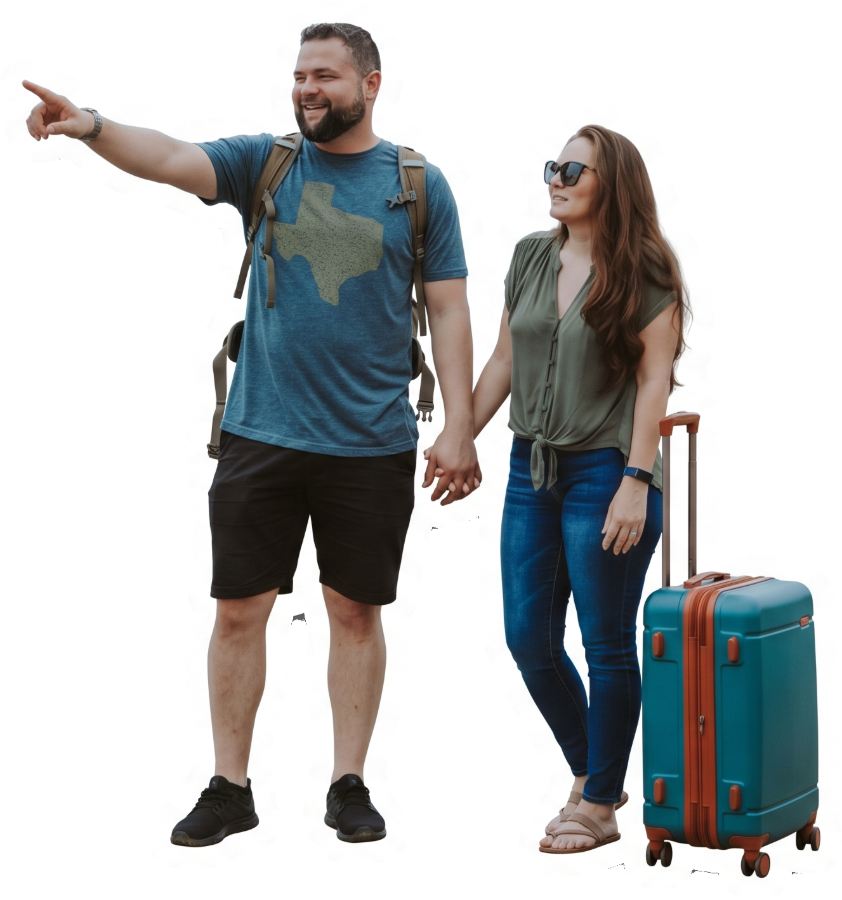
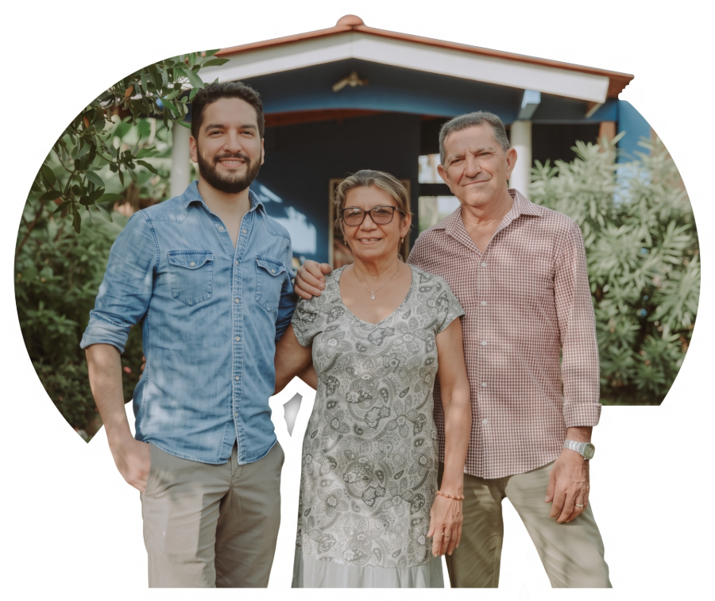
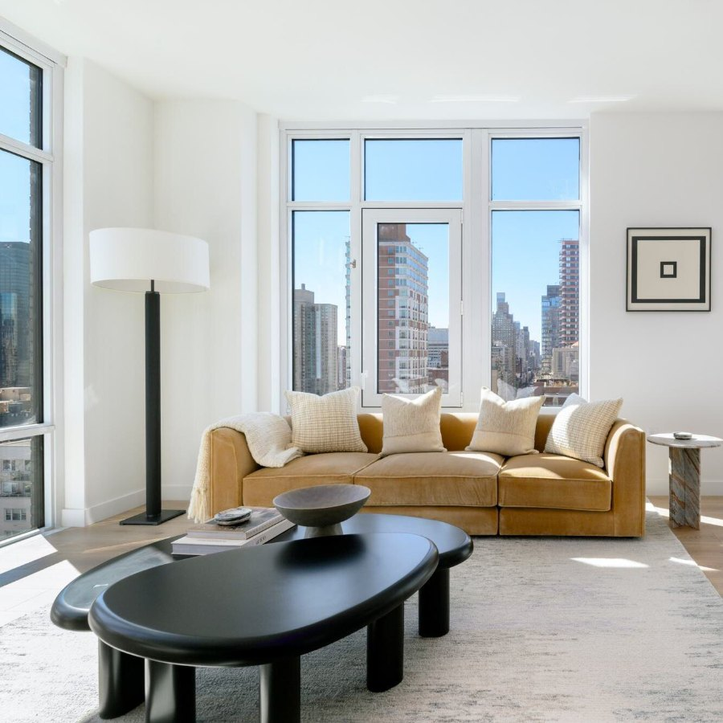

Caso de éxito de un emprendimiento de base tecnológica
Equipo KASECA
Karly Alexa Puentes Moreno
Sebastian Villanueva Mosquera
Camilo Artunduaga Bueno
Taller de Emprendimiento e Innovación, Ingeniería de Sistemas
Universidad de la Amazonia, Florencia (Caquetá), 2026

San Francisco, 2007 (recreación)
Fuente: Airbnb, Form S-1 ante la SEC (2020)
El origen 2007–2008
Origen
San Francisco, EE. UU.
Sector
Turismo y alojamiento
Producto
Plataforma digital
Fundación
2007–2008
Brian CheskydiseñadorJoe GebbiadiseñadorNathan Blecharczykingeniero (2008)
3 huéspedesa USD 80 la noche, con los hoteles llenos por una conferencia de diseño
2 reservasen el lanzamiento oficial, durante el festival SXSW
80 reservasen la Convención Demócrata; estrenan pagos dentro de la plataforma
Octubre de 2007San Francisco
Marzo de 2008Austin
Agosto de 2008Denver
Fuentes: Airbnb, Form S-1 ante la SEC (2020); Airbnb Newsroom, «About us» (2026); Newsweek (24-ago-2026)
Un problema con dos lados


?
Airbnb los conecta
Huéspedes
Viajeros que necesitan dónde quedarse cuando los hoteles se llenan.
Anfitriones
Personas con un espacio libre que quieren ingresos extra.
Sin anfitriones no llegan huéspedes, y sin huéspedes nadie publica.
¿Quién usa?
Los dos lados: huéspedes y anfitriones.
¿Quién paga?
El huésped paga la reserva. Airbnb se queda con una comisión de uno o de ambos lados.
Detalle en la diapositiva 7
Oct. 2007
Mar. 2008
Ago. 2008
Fuentes: Airbnb, Form S-1 (2020) y 10-K 2025 (2026); P. Graham, «Do Things that Don't Scale» (2013)
El producto real: la confianza
¿Dejarías entrar a un desconocido a tu casa?
Propuesta de valor
Huésped: dónde quedarse, con alguien local.
Anfitrión: ingresos con un espacio que ya tiene.
Qué la diferencia
Frente al hotel: menor costo y las comodidades de un hogar.
Frente a otros sitios de anuncios: perfiles con foto, reseñas y pago seguro.
El MVP (2007)«un sitio web básico»
Boceto ilustrativo: no es una captura del sitio original.
CONFIANZA
Oct. 2007
Mar. 2008
Ago. 2008
Fuentes: Airbnb, Form S-1 (2020); J. Gebbia, NPR/TED (2016); D. Guttentag (2015); Ert, Fleischer y Magen (2016); Airbnb Newsroom (2026)
El valle de la muerte 2008–2009
0
inversionistas
Buscaban USD 150.000 por el 10 % de la empresa: una valoración de USD 1,5 millones.
Re: AirBed & BreakfastDe: inversionistaNO
Re: AirBed & BreakfastDe: inversionistaNO
Re: AirBed & BreakfastDe: inversionistaNO
Re: AirBed & BreakfastDe: inversionistaNO
Re: AirBed & BreakfastDe: inversionistaNO
De 7 inversionistas, 5 dijeron que no y 2 ni respondieron.
Venden cereal de edición numerada: 500 cajas de cada una, a USD 40.
cerca de USD 30.000
«Después de trabajar un año en la empresa sin conseguir crecimiento, acordaron darle una última oportunidad.»
Enero de 2009
Entran a Y CombinatorUSD 20.000 por el 6 %
Oct. 2007
Mar. 2008
Ago. 2008
Ene. 2009
Mar. 2009
Fuentes: VentureBeat (13-jul-2015); F. Wilson, AVC (2011); Crunchbase News (2020); P. Graham (2020); Y Combinator
«Hacer cosas que no escalan»
El consejo de Paul Graham (Y Combinator) en 2009: ir a Nueva York, visitar a los anfitriones y fotografiar sus espacios

Nueva York (foto ilustrativa)
Claves del éxito (análisis del grupo)
Decisiones
Ir en persona y diseñar la confianza
Capacidades
Diseño e ingeniería en el mismo equipo
Condiciones
Y Combinator y capital semilla
USD 200
USD 400
antes
una semana después
Ingresos de Airbnb por semana, en 2009
Capital semilla, 2009
Sequoia Capitaljunto con Youniversity Ventures
Marzo de 2009
Ahora se llama AirbnbCasas y apartamentos completos, no solo colchones
Oct. 2007
Mar. 2008
Ago. 2008
Ene. 2009
Mar. 2009
Fuentes: P. Graham (2013 y 2020); First Round Review (4-feb-2015); VentureBeat (2010); Sequoia Capital; Airbnb Newsroom (2026)
Airbnb gana solo cuando hay una estadía
Sus ingresos son tarifas de servicio: un porcentaje del valor de cada reserva, que registra cuando el huésped llega.
Tarifa dividida: el huésped paga 14,1 %–16,5 % y el anfitrión ≈ 3 %
El huésped paga
USD 114,10
Airbnb recibe
USD 17,1014,10 del huésped + 3,00 del anfitrión
El anfitrión recibe
USD 97,00
Tarifa única: solo paga el anfitrión, ≈ 15,5 %
El huésped paga
USD 100,00
Airbnb recibe
USD 15,50todo del lado del anfitrión
El anfitrión recibe
USD 84,50
Ejemplo ilustrativo: reserva de USD 100 sin impuestos (tarifa dividida con 14,1 % + 3 %). Airbnb está pasando a todos los anfitriones de vivienda a la tarifa única. Tarifas publicadas por Airbnb, consultadas el 18 de octubre de 2026.
Lo que se queda Airbnb
USD 13
de cada USD 100 reservados en 2025, aproximadamente.
Cálculo del grupo: ingresos de USD 12.241 millones ÷ USD 91.300 millones en reservas (valor bruto), según la carta a accionistas del cuarto trimestre de 2025.
Fuentes: Airbnb, 10-K 2025 y carta a accionistas Q4 2025 (12-feb-2026); Centro de ayuda de Airbnb, «Tarifas de servicio» (consultado el 18-oct-2026)
De 3 colchones inflables…
a más de 9 millones de anuncios activos
Airbnb Newsroom, mayo de 2026
USD 12.241 Mde ingresos en 2025 (+10 % frente a 2024)Airbnb, 10-K año fiscal 2025
533,0 Mde noches y plazas reservadas en 2025Airbnb, carta a accionistas Q4 2025
220+países y regiones con anunciosAirbnb Newsroom, mayo de 2026
La dificultad
Una crisis de confianza (2011)
Un huésped destrozó la casa de una anfitriona en San Francisco y Airbnb reaccionó tarde. Su CEO lo admitió: «no estábamos preparados para la crisis».
1 de agosto de 2011Disculpa pública del CEO
15 de agosto de 2011Garantía al anfitrión de USD 50.000
Mayo de 2012Garantía de USD 1 millón
Fuentes: Airbnb, 10-K y carta Q4 2025 (12-feb-2026); Airbnb Newsroom (2026); TechCrunch (2011); VentureBeat (2010); Airbnb, comunicado de salida a bolsa (2020)
Pregunta orientadora
¿Qué explica que esta empresa haya convertido una solución tecnológica en un negocio de alto valor comercial y qué puede aprender el grupo de ese proceso?
Convirtió la confianza entre desconocidos en un producto, y cobra por cada estadía.
Sebastian
Lo que aprendimos
El producto real: la confianza
La tecnología sola vale poco
Se construye lento, se pierde rápido
Karly
Lo que aplicaríamos en Caquetá
Alojamiento seguro para estudiantes
Impulsar el turismo local
Empezar pequeño y escuchar
Camilo
Lo difícil de replicar
Suerte, momento y red de inversión
Regulación: el RNT desde el inicio
Proteger la confianza siempre
Reflexión propia del grupo. Apoyos: Ley 2069 de 2020 (material de clase); MinCIT (17-ene-2022) sobre el RNT de las plataformas
Referencias
Fuentes oficiales: Airbnb y entidades públicas
Airbnb, Inc. (2020).Form S-1 [prospecto de salida a bolsa]. SEC. sec.gov
Airbnb, Inc. (2026).Form 10-K, año fiscal 2025. SEC. sec.gov
Airbnb, Inc. (2026).Carta a accionistas del cuarto trimestre de 2025. SEC. sec.gov
Sawers, P. (2015).Airbnb once tried to give away 10% of the company for $150K, and nobody bit. VentureBeat. venturebeat.com
Kunthara, S. (2020).Airbnb's IPO Is A Big Deal For The Company. It's Big For Y Combinator, Too. Crunchbase News. news.crunchbase.com
Arrington, M. (2011).Airbnb Offers Unconditional Apology, And $50,000 Insurance Guarantee. TechCrunch. techcrunch.com
Fuentes académicas
Guttentag, D. (2015).Airbnb: disruptive innovation and the rise of an informal tourism accommodation sector. Current Issues in Tourism, 18(12), 1192–1217. doi.org
Ert, E., Fleischer, A. y Magen, N. (2016).Trust and reputation in the sharing economy: The role of personal photos in Airbnb. Tourism Management, 55, 62–73. doi.org
Gracias. ¿Preguntas?
Todas las fuentes en línea se consultaron el 18 de octubre de 2026. Lista completa en las notas.